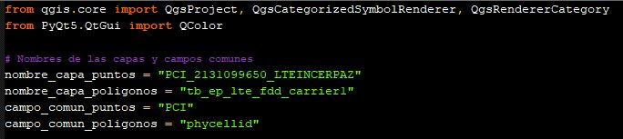
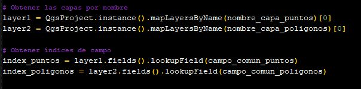
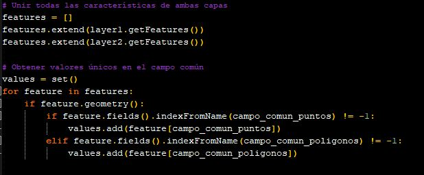
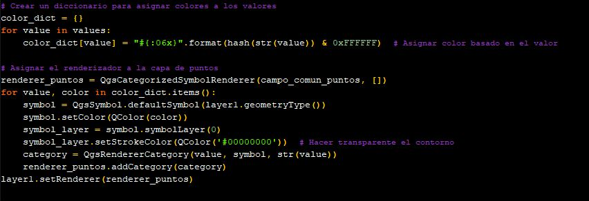
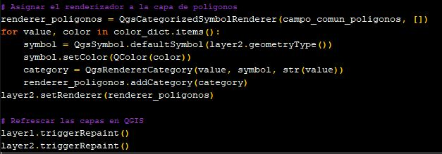

En el campo de las telecomunicaciones, identificar los servidores preferidos ("best servers") es crucial para entender la distribución y rendimiento de la red. Hoy quiero compartir un script que desarrollé utilizando Python en QGIS (PyQGIS) para representar gráficamente las muestras de PCI recolectadas en campo y las celdas LTE que comparten el mismo identificador, asignándoles colores coincidentes.
Este enfoque automatizado mejora la interpretación de datos y optimiza el proceso de análisis, permitiendo una identificación rápida de relaciones entre mediciones de campo y configuración de red.
- ✅ Reduce errores manuales en asignación de colores
- ✅ Acelera el análisis de cobertura y interferencia
- ✅ Facilita la identificación de overshooting y holes
- ✅ Escalable para proyectos con miles de celdas
1 El desafío: visualización coordinada de PCI
La visualización de datos de Drive Test junto con las celdas definidas en una red LTE puede ser un reto cuando se busca identificar las relaciones entre ellos. Este script simplifica el proceso asignando colores iguales a las muestras de PCI y a las celdas LTE correspondientes, lo que facilita la identificación visual de "best servers" y patrones de cobertura.
Contexto técnico: El PCI (Physical Cell Identity) es un identificador único de 0-503 en LTE. Visualizar muestras de campo y celdas con el mismo PCI en el mismo color permite identificar rápidamente qué celda está sirviendo cada ubicación medida.
2 Importar módulos necesarios en PyQGIS
Primero, importamos los módulos de QGIS para interactuar con capas y manejar estilos de colores:
# Importar módulos de QGIS y manejo de colores
from qgis.core import QgsProject, QgsCategorizedSymbolRenderer, QgsRendererCategory
from qgis.PyQt.QtGui import QColor
import hashlib

3 Configurar nombres de capas y campos PCI
Definimos los nombres de las capas y los campos que contienen los identificadores PCI en cada capa:
# Nombres de capas en QGIS
LAYER_POINTS = "DriveTest_Samples" # Capa de puntos con muestras de campo
LAYER_POLYGONS = "LTE_Cells" # Capa de polígonos con celdas LTE
# Campos que contienen el PCI en cada capa
FIELD_PCI_POINTS = "PCI" # Campo PCI en capa de puntos
FIELD_PCI_POLYGONS = "PCI" # Campo PCI en capa de polígonos
# Obtener referencias a las capas desde el proyecto QGIS
layer_points = QgsProject.instance().mapLayersByName(LAYER_POINTS)[0]
layer_polygons = QgsProject.instance().mapLayersByName(LAYER_POLYGONS)[0]Identificamos los índices de los campos relevantes en cada capa para acceso eficiente durante el procesamiento.
4 Extraer valores únicos de PCI
Obtenemos todas las características de ambas capas y extraemos los valores únicos de PCI para generar la paleta de colores:
# Extraer todos los valores únicos de PCI de ambas capas
unique_pcis = set()
# Procesar capa de puntos (muestras de Drive Test)
for feat in layer_points.getFeatures():
pci = feat[FIELD_PCI_POINTS]
if pci is not None:
unique_pcis.add(int(pci))
# Procesar capa de polígonos (celdas LTE)
for feat in layer_polygons.getFeatures():
pci = feat[FIELD_PCI_POLYGONS]
if pci is not None:
unique_pcis.add(int(pci))
print(f"Total de PCI únicos encontrados: {len(unique_pcis)}")

5 Generar colores únicos por hash
Utilizamos un hash del valor PCI para generar colores consistentes y únicos para cada identificador:
# Función para generar color único a partir de un valor PCI
def generate_color_from_pci(pci_value):
"""Genera un color RGB consistente para un valor PCI usando hash"""
# Crear hash del valor PCI
hash_obj = hashlib.md5(str(pci_value).encode())
hash_hex = hash_obj.hexdigest()
# Extraer componentes RGB del hash (primeros 6 caracteres hex)
r = int(hash_hex[0:2], 16)
g = int(hash_hex[2:4], 16)
b = int(hash_hex[4:6], 16)
return QColor(r, g, b)
# Crear diccionario de colores para cada PCI
pci_colors = {pci: generate_color_from_pci(pci) for pci in unique_pcis}Este método garantiza que el mismo PCI siempre tenga el mismo color, independientemente del orden de procesamiento.
6 Aplicar renderizador categorizado a puntos
Creamos un renderizador categorizado para la capa de puntos, asignando un color único a cada PCI:
# Crear renderer categorizado para capa de puntos
categories_points = []
for pci in unique_pcis:
symbol = layer_points.renderer().symbol().clone()
symbol.setColor(pci_colors[pci])
category = QgsRendererCategory(pci, symbol, str(pci))
categories_points.append(category)
renderer_points = QgsCategorizedSymbolRenderer(FIELD_PCI_POINTS, categories_points)
layer_points.setRenderer(renderer_points)
layer_points.triggerRepaint()
7 Aplicar mismo esquema a polígonos de celdas
Repetimos el proceso para la capa de polígonos, garantizando que las celdas LTE tengan el mismo color que sus muestras correspondientes:
# Crear renderer categorizado para capa de polígonos (mismo esquema de colores)
categories_polygons = []
for pci in unique_pcis:
symbol = layer_polygons.renderer().symbol().clone()
symbol.setColor(pci_colors[pci])
# Ajustar transparencia para polígonos (mejor visualización sobre mapa)
symbol.setOpacity(0.6)
category = QgsRendererCategory(pci, symbol, str(pci))
categories_polygons.append(category)
renderer_polygons = QgsCategorizedSymbolRenderer(FIELD_PCI_POLYGONS, categories_polygons)
layer_polygons.setRenderer(renderer_polygons)
layer_polygons.triggerRepaint()
print("✅ Visualización de Best Server aplicada exitosamente")Finalmente, refrescamos las capas para que los cambios sean visibles inmediatamente en QGIS.
8 Resultado final y beneficios
¡Listo! Ahora tienes una visualización donde muestras de Drive Test y celdas LTE con el mismo PCI comparten color, facilitando el análisis de best servers:
🎯 Beneficios del Script:
- Eficiencia: Automatiza la identificación de "best servers", reduciendo errores manuales y tiempo de análisis
- Claridad Visual: Facilita la interpretación de relaciones entre muestras de campo y configuración de red
- Consistencia: El mismo PCI siempre tiene el mismo color, permitiendo comparación entre sesiones
- Flexibilidad: Puede ser adaptado para otros casos de uso geoespacial (RSRP, SINR, throughput)
- Escalabilidad: Funciona con proyectos de miles de celdas sin degradación de rendimiento
🚀 Próximo nivel: Integra este script en tu pipeline de automatización con OptiNetDB para generar reportes automáticos de best server por región, tecnología o período de tiempo.
Conclusión
Este script demuestra cómo Python y QGIS pueden trabajar juntos para resolver problemas específicos en telecomunicaciones. La automatización de tareas repetitivas de visualización no solo ahorra tiempo, sino que también mejora la consistencia y calidad del análisis técnico.
Al adoptar enfoques programáticos para la optimización RF, los ingenieros pueden enfocarse en la interpretación de resultados y la toma de decisiones estratégicas, en lugar de tareas manuales de configuración visual.
Espero que esta herramienta sea útil para tu trabajo diario. ¡No dudes en adaptarla a tus necesidades específicas y compartirla con la comunidad!
Comentarios
Los comentarios están deshabilitados temporalmente. Para preguntas técnicas sobre el script, contáctame directamente por email o LinkedIn.